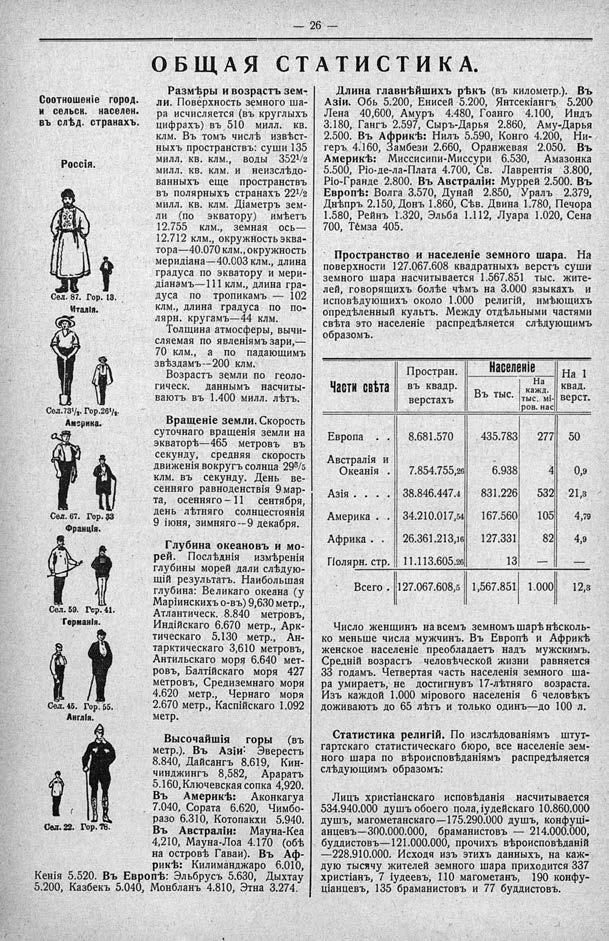

Лист источника 72
Скан

Распознанный текст
26
ОБЩАЯ СТАТИСТИКА.
Соотношеніе город.
и сельск. населен.
въ слѣд. странахъ.
Россія.
Сел. 87. Гор. 13.
Италія.
Сел. 73 1/2. Гор. 26 1/2.
Америка.
Сел. 67. Гор. 33
Франція.
Сел. 59. Гор. 41.
Германія.
Сел. 45. Гор. 55.
Англія.
Сел. 22. Гор. 78.
Размѣры и возрастъ зем-
ли. Поверхность земного ша-
ра исчисляется (въ круглыхъ
цифрахъ) въ 510 милл. кв.
клм. Въ томъ числѣ извѣст-
ныхъ пространствъ: суши 135
милл. кв. клм., воды 352 1/2
милл. кв. клм. и неизслѣдо-
ванныхъ еще пространствъ
въ полярныхъ странахъ 22 1/2
милл. кв. клм. Діаметръ зем-
ли (по экватору) имѣетъ
12.755 клм., земная ось—
12.712 клм., окружность эква-
тора—40.070 клм., окружность
меридіана—40.003 клм., длина
градуса по экватору и мери-
діанамъ—111 клм., длина гра-
дуса по тропикамъ — 102
клм., длина градуса по по-
лярн. кругамъ—44 клм.
Толщина атмосферы, вычи-
сляемая по явленіямъ зари,—
70 клм., а по падающимъ
звѣздамъ--200 клм.
Возрастъ земли по геоло-
гическ. даннымъ насчиты-
ваютъ въ 1.400 милл. лѣтъ.
Вращеніе земли. Скорость
суточнаго вращенія земли на
экваторѣ—465 метровъ въ
секунду, средняя скорость
движенія вокругъ солнца 29 3/5
клм. въ секунду. День ве-
сенняго равноденствія 9 мар-
та, осенняго—11 сентября,
день лѣтняго солнцестоянія
9 іюня, зимняго--9 декабря.
Глубина океановъ и мо-
рей. Послѣднія измѣренія
глубины морей дали слѣдую-
щій результатъ. Наибольшая
глубина: Великаго океана (у
Маріинскихъ о-въ) 9,630 метр.,
Атлантическ. 8.840 метровъ,
Индійскаго 6.670 метр., Арк-
тическаго 5.130 метр., Ан-
тарктическаго 3,610 метровъ,
Антильскаго моря 6.640 мет-
ровъ, Балтійскаго моря 427
метровъ, Средиземнаго моря
4.620 метр., Чернаго моря
2.670 метр., Каспійскаго 1.092
метр.
Высочайшія горы (въ
метр.). Въ Азіи: Эверестъ
8.840, Дайсангъ 8.619, Кин-
чинджингъ 8,582, Араратъ
5.160, Ключевская сопка 4,920.
Въ Америкѣ: Аконкагуа
7.040, Сората 6.620, Чимбо-
разо 6.310, Котопакхи 5.940.
Въ Австраліи: Мауна-Кеа
4,210, Мауна-Лоа 4.170 (обѣ
на островѣ Гаваи). Въ Аф-
рикѣ: Килиманджаро 6.010,
Кенія 5.520. Въ Европѣ: Эльбрусъ 5.630, Дыхтау
5.200, Казбекъ 5.040, Монбланъ 4.810, Этна 3.274.
Длина главнѣйшихъ рѣкъ (въ километр.). Въ
Азіи. Обь 5.200, Енисей 5.200, Янтсекіангъ 5.200
Лена 40,600, Амуръ 4.480, Гоанго 4.100, Индъ
3.180, Гангъ 2.597, Сыръ-Дарья 2.860, Аму-Дарья
2.500. Въ Африкѣ: Нилъ 5.590, Конго 4.200, Ни-
геръ 4.160, Замбези 2.660, Оранжевая 2.050. Въ
Америкѣ: Миссисипи-Миссури 6.530, Амазонка
5.500, Ріо-де-ла-Плата 4.700, Св. Лаврентія 3.800,
Ріо-Гранде 2.800. Въ Австраліи: Муррей 2.500. Въ
Европѣ: Волга 3.570, Дунай 2.850, Уралъ 2.379,
Днѣпръ 2.150, Донъ 1.860, Сѣв. Двина 1.780, Печора
1.580, Рейнъ 1.320, Эльба 1.112, Луара 1.020, Сена
700, Темза 405.
Пространство и населеніе земного шара. На
поверхности 127.067.608 квадратныхъ верстъ суши
земного шара насчитывается 1.567.851 тыс. жите-
лей, говорящихъ болѣе чѣмъ на 3.000 языкахъ и
исповѣдующихъ около 1.000 религій, имѣющихъ
опредѣленный культъ. Между отдѣльными частями
свѣта это населеніе распредѣляется слѣдующимъ
образомъ.
Части свѣта Простран. въ квадр. верстахъ Населеніе Въ тыс. Населеніе На кажд. тыс. міров. нас. На 1 квад. верст.
Европа . . . . . 8.681.570 435.783 277 50
Австралія и Океанія . 7.854.755,26 6.938 4 0,9
Азія . . . . . . 38.846.447.4 831.226 532 21,3
Америка . . 34.210.017,54 167.560 105 4,79
Африка . . 26.361.213,16 127.331 82 4,9
Полярн. стр. 11.113.605,26 13 — —
Всего . 127.067.608,5 1,567.851 1.000 12,3
Число женщинъ на всемъ земномъ шарѣ нѣсколь-
ко меньше числа мужчинъ. Въ Европѣ и Африкѣ
женское населеніе преобладаетъ надъ мужскимъ.
Средній возрастъ человѣческой жизни равняется
33 годамъ. Четвертая часть населенія земного ша-
ра умираетъ, не достигнувъ 17-лѣтняго возраста.
Изъ каждой 1.000 мірового населенія 6 человѣкъ
доживаютъ до 65 лѣтъ и только одинъ—до 100 л.
Статистика религій. По изслѣдованіямъ штут-
гартскаго статистическаго бюро, все населеніе зем-
ного шара по вѣроисповѣданіямъ распредѣляется
слѣдующимъ образомъ:
Лицъ христіанскаго исповѣданія насчитывается
534.940.000 душъ обоего пола, іудейскаго 10.860.000
душъ, магометанскаго—175.290.000 душъ, конфуці-
анцевъ—300.000.000, браманистовъ — 214.000.000,
буддистовъ—121.000.000, прочихъ вѣроисповѣданій
—228.910.000. Исходя изъ этихъ данныхъ, на каж-
дую тысячу жителей земного шара приходится 337
христіанъ, 7 іудеевъ, 110 магометанъ, 190 конфу-
ціанцевъ, 135 браманистовъ и 77 буддистовъ.